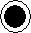
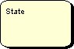
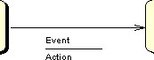
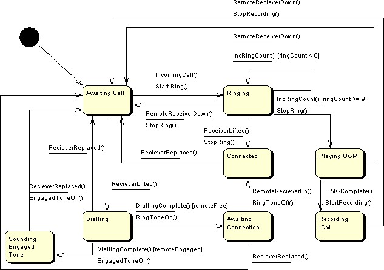

|
|
|||||||||
Definition: An initial state is used to identify the first transition to be taken within a model. The destination of the first transition is thus the first state to be entered within the model (i.e. the default state).
Representation: An initial state is represented by a solid circular shaped node that is (by default) black in color. i.e.

Creation: The initial state is created automatically when the model is first created.
Rules: There can be only one initial state of a system and it cannot be deleted as all state transition diagrams must have an initial state. An initial state may have several outgoing transitions, but in this case each transition should be in response to a different incoming event (or guard condition). An initial state may have no incoming transitions.
Operations: Move Forwards/Backwards, Bring to Front, Send to Back, Delete, Add Subsequent State, Add Transition, Change Color.
Definition: A final state is used to identify the completion of a state machine. A final state has incoming transitions only.
Representation: A final state is represented by a solid circular shaped node with a larger outer circle that is (by default) black in color. i.e.

Creation: The final state can be created by either right clicking on the diagram editor or right clicking on the state you want to attach to a final state. From the menu select the "Add Final State" option and left click where you want the final state to be positioned. If the final state is added by right clicking on a state a transition will be added automatically, but if the final state is added by right clicking on the diagram you must add the incoming transitions manually.
Rules: There can be at most one final state of a system. A final state may have several incoming transitions but may not have any outgoing transitions.
Operations: Move Forwards/Backwards, Bring to Front, Send to Back, Delete, Change Color.
Definition: A state is used to represent a situation or condition where a set of circumstances are known to be true. States are connected to other states using transitions which define why a state is entered and why a state is exited.
Representation: A state is represented by a rectangular node shape with rounded corners. By default the state is yellow with a black border. i.e.

Creation: A state can be created by either right clicking on the diagram editor or right clicking on the state you want to attach to a new state. From the menu select the "Add (subsequent) State" option and left click where you want the state to be positioned. If the state is added by right clicking on an existing state then a transition will be added automatically, but if the state is added by right clicking on the diagram you must add the transitions manually.
Rules: A state must have at least one incoming and one outgoing transition. A state must be named.
Operations: Move Forwards/Backwards, Bring to Front, Send to Back, Delete, Add Subsequent State, Add Subsequent Final State, Add Transition, Change State/Text Color, Edit State Annotation, Edit State Name.
Definition: A transition is used to model the changing of state within a system. A transition is triggered by a specific event. Once the transition has been taken a specified action may be executed. An optional guard may also be shown (usually by placing a [condition] after the trigger event name) that identifies additional constraints that must be satisfied before the transition may be taken.
Representation: A transition is represented by solid line linking a source and destination state. An arrow indicates the direction of the transition. The event and possible action are shown next to a transition separated by a horizontal line. i.e.

Creation: A transition can be created by right clicking on the state that is to be the source of the transition and selecting "Add Transition" from the menu. You must then left click the state you wish to be the destination of the transition. You will then be prompted to add an event and an action description, enter the details as required and left click "OK".
Rules: A transition should always have an event specified (except from the initial state), but actions are optional.
Operations: Move Forwards/Backwards, Bring to Front, Send to Back, Delete, Add/Remove Link Point, Change Link/Text Color and Edit Event/Action Details.
Below is an example of a state transition diagram.
